UDN
Search public documentation:
MaterialMasksJP
English Translation
中国翻译
한국어
Interested in the Unreal Engine?
Visit the Unreal Technology site.
Looking for jobs and company info?
Check out the Epic games site.
Questions about support via UDN?
Contact the UDN Staff
中国翻译
한국어
Interested in the Unreal Engine?
Visit the Unreal Technology site.
Looking for jobs and company info?
Check out the Epic games site.
Questions about support via UDN?
Contact the UDN Staff
マテリアルマスク: マテリアル式を使用した、アルゴリズム手法によるマスクの作成
ドキュメントの概要: マテリアルマスクの作成チュートリアル。 ドキュメントの変更ログ: 初稿は David Green?。マテリアルマスクの概要
このチュートリアルでは、テクスチャの代わりにマテリアル式を用いて、マスク、エッジおよびグラデーションを作成する方法を説明します。テクスチャの使用には、豊富なマスク形状や、マテリアルインストラクションの数が概して少ないことなどの利点がありますが、アルゴリズム手法により設計された式マスクにも独自の利点があります。
アルゴリズム手法により設計された式マスクを使用する利点としては、1) テクスチャが存在しないので、パッケージ サイズが小さくなる、2) Unreal エディタで素早くマスクを編集できる、3) 各種のマテリアル式 (Panner、Rotator、Sine、Time など) を用いたアニメーションマスク、および4) 各種のマスク プロパティを Kismet で制御できる、などを挙げることができます。 これらのアルゴリズム型マスクを標準テクスチャベースのマテリアル内で使用することで、不透明/透明マスクを提供したり、テクスチャの特定領域をマスキングしてスペキュラー量またはスペキュラーパワー (反射の強度) を変更できます。さらに、LinearInterpolate 式のマスクとして使用し、複数のテクスチャを合成したり、マテリアルを作成する際のエフェクトのグラデーションカラー設定にも使用できます。
基本的な構成要素
アルゴリズム型マスクは、各種の基礎的要素の小さなセットを用いて作成します。これらの各要素の詳細について、マテリアル式の画像を付けて説明します。 マスクの主な骨組みは、DotProduct 式をつなぎ、基本的なグレースケールグラデーションを提供することにより作成します。DotProduct 式には 2 つの同じ「チャンネル」数を持つ入力値が必要です。この特別なケースでは、これは 1 つのインプットあたり 2 つのチャンネルであり、TexCoord (U と V を提供) と Constant2Vector (R と G を提供) を使用しています。
DotProduct 演算はこれら 2 セットの値を取り、スカラー量を返します。適切な入力値が使用されたときに、これはグラデーションに似た一連の値を生成します。 DotProduct の A ノードにつないだ TexCoord 式は、デフォルトでは UV 値が 1.0 で、0 および 1 の B ノード値との組み合わせにより滑らかなグラデーションが生成されます。
 TexCoord の UV 値を変更するとグラデーションが変化しますが、この変化は B ノードにつながれた Constant2Vector 式の値を変更する方がより効率的に実行できます。
TexCoord の UV 値を変更するとグラデーションが変化しますが、この変化は B ノードにつながれた Constant2Vector 式の値を変更する方がより効率的に実行できます。
 DotProduct の B ノードにつながれた Constant2Vector 式は、スカラー量の計算に用いる 2 番目の値ペアを提供します。0 から 1 の範囲の値を使うことで、DotProduct 式はグレー値が 0 から 1 の範囲のグラデーションを生成します。
DotProduct の B ノードにつながれた Constant2Vector 式は、スカラー量の計算に用いる 2 番目の値ペアを提供します。0 から 1 の範囲の値を使うことで、DotProduct 式はグレー値が 0 から 1 の範囲のグラデーションを生成します。Constant2Vector 値を R=0 G=1 に設定すると、垂直グラデーションが作成されます。R=1 G=0 の値は水平グラデーション、R=1 G=1 の値は垂直グラデーションが作成されます。いずれの値も -1 の場合は加算的な変形が作成されますが、あまり役に立ちません。
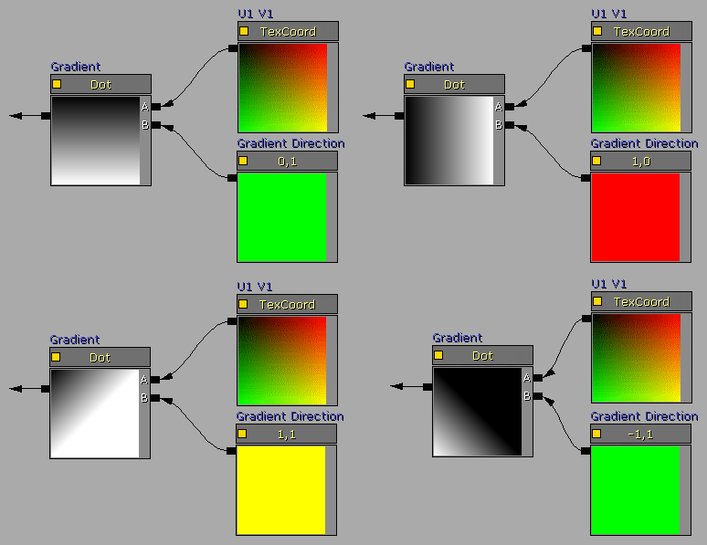
マテリアルに関しては、値が 0.0 の場合にブラック、1.0 の場合にホワイトになり、 1.0 より大きい値は色をブルームとして「押し出し」ます。アルゴリズム型マスクのこの機能を活用してグラデーション対ソリッドの比率を変化させ、小さなグラデーションランプや、ソフトエッジのフェザーを提供することができます。Constant2Vector の RG プロパティを 1 より大きい値に設定すると、グラデーション範囲の量がブラックからホワイトに変化し、グラデーション率が減少してホワイトの比率が増大します。ConstantClamp 式 をアウトプットに追加して、0 から 1 の範囲に戻して固定することができます。
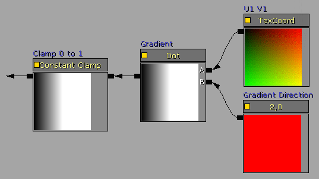
グラデーションではなくソリッド エッジのマスクを作成するには、Subtract 式を使用してブラック一色の領域の量を設定し、Multiply 式を使用してソリッド ブラックへの出力とホワイトへの変化を操作します。
まとめ
上記の基本要素を多彩に組み合わせることで、さまざまなマスクやグラデーションスタイルを作成できます。以下のアルゴリズム型マスクを使用したマテリアルのサンプルは、ほんの一部に過ぎません。 これらのアルゴリズム型マスクのマテリアルでは、マテリアルのインスタンス化や Kismet による制御を可能にする ScalarParameter または VectorParameter 式がよく使用される点に留意してください。値のアニメーション (変動) も、各種のマテリアル式 (Panner、Rotator、Sine、Time など) により達成することができます。 水平グラデーション

 水平グラデーション
水平グラデーション

 水平グラデーション、50% ブルーム
水平グラデーション、50% ブルーム

 垂直グラデーション
垂直グラデーション

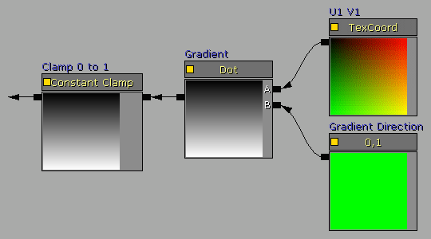
垂直グラデーション
 角度グラデーション
角度グラデーション
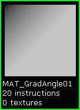
 角度グラデーション
角度グラデーション

 カラーグラデーション
カラーグラデーション

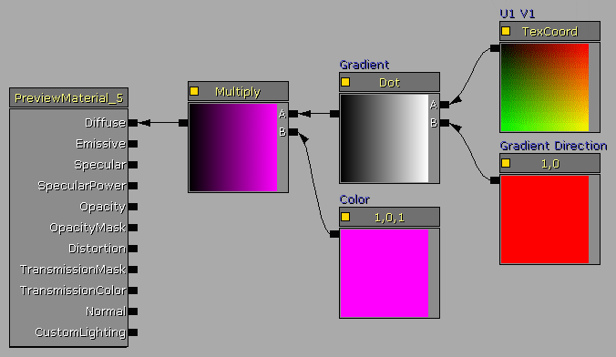
フェザー処理されたカラーグラデーション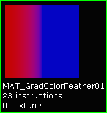
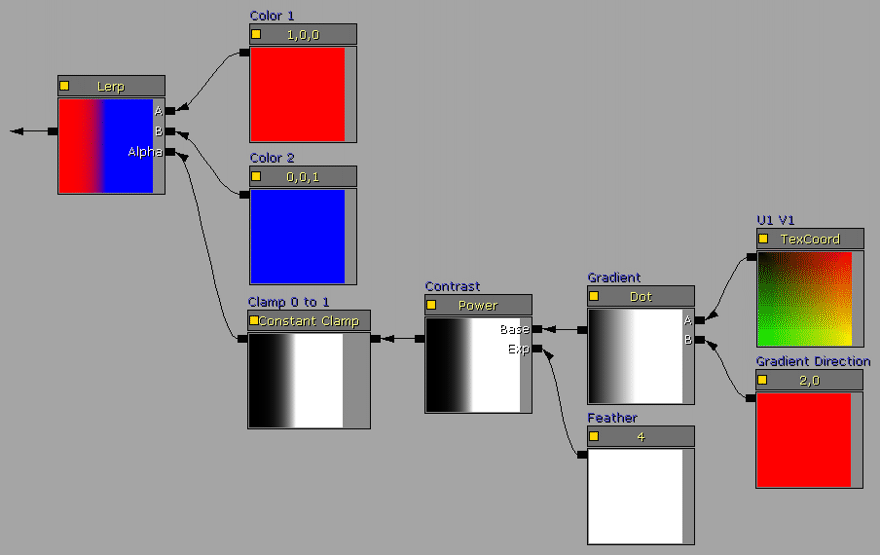
マルチバンドのカラーグラデーション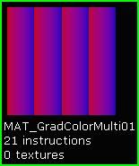
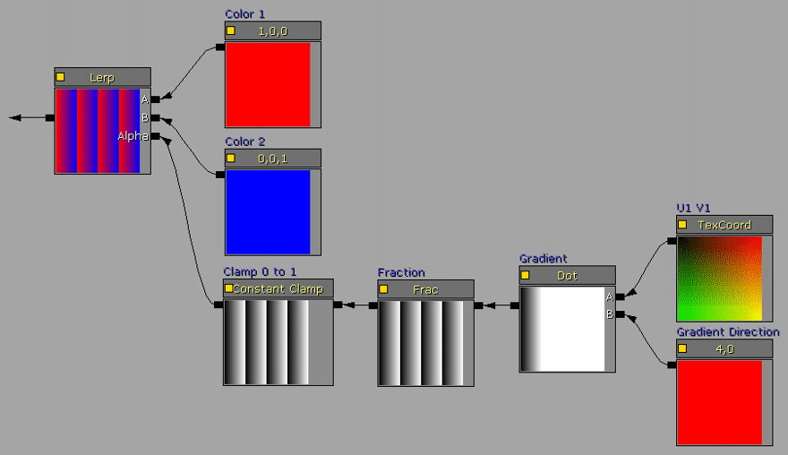
ポイントグラデーション (3 ポイント)
 ソリッド (上)
ソリッド (上)
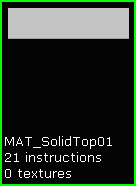
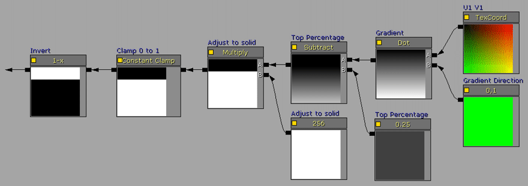
ソリッド (下)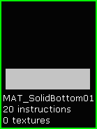
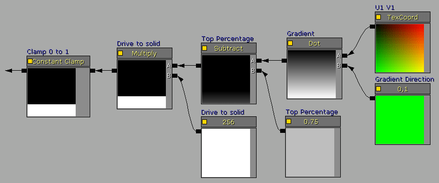
ソリッド (左)
 ソリッド (右)
ソリッド (右)

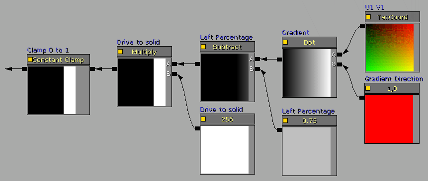
ソリッドボーダー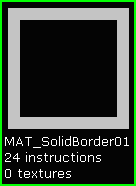

アニメーションマスクの例
このサンプルマテリアルの設定は、横方向にスィープするソリッド マスクを生成します。 マスクのパーセントの定数値が Sine 式に置き換えられ、0 から 1 にスィープするマスクのパーセント値を提供しています。